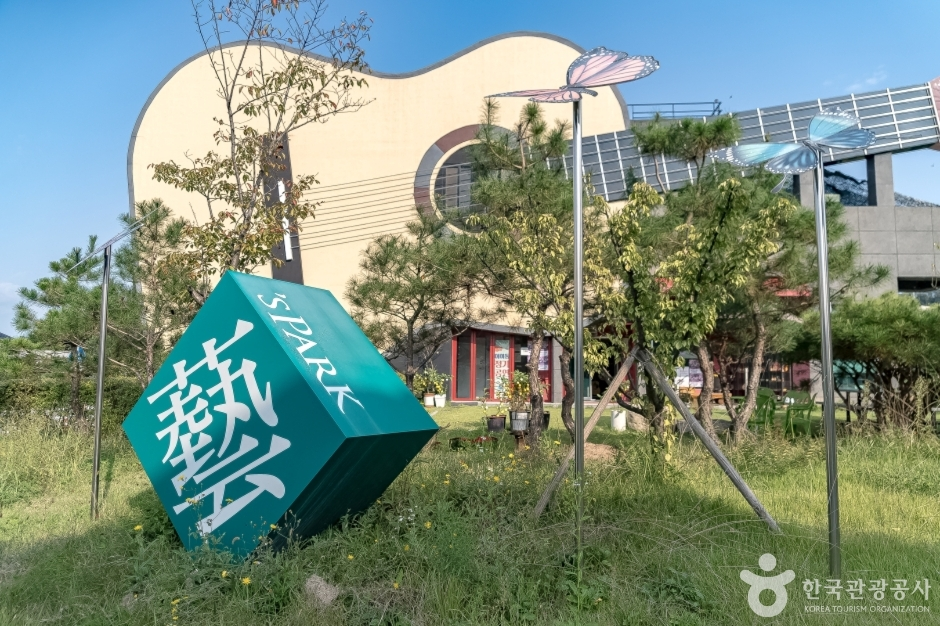
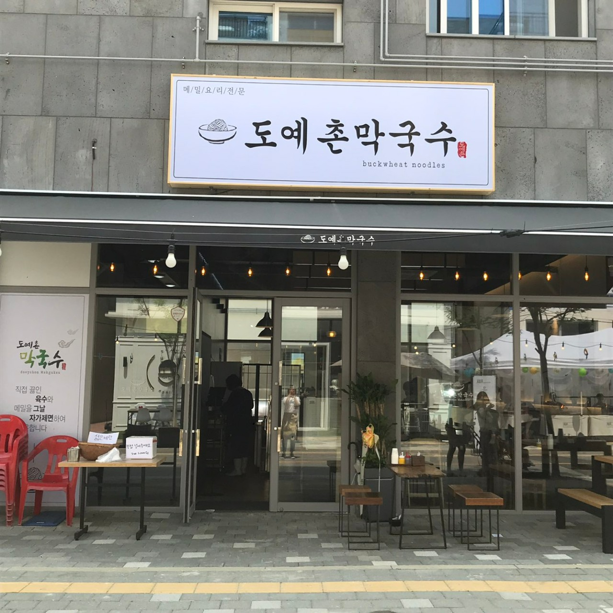
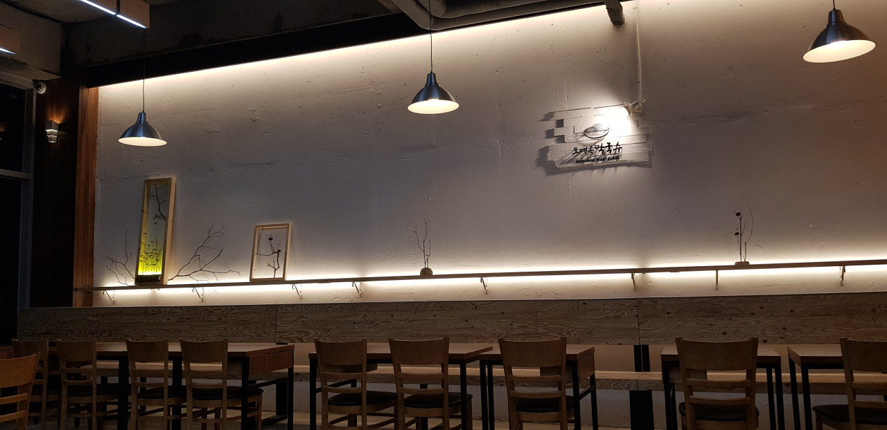
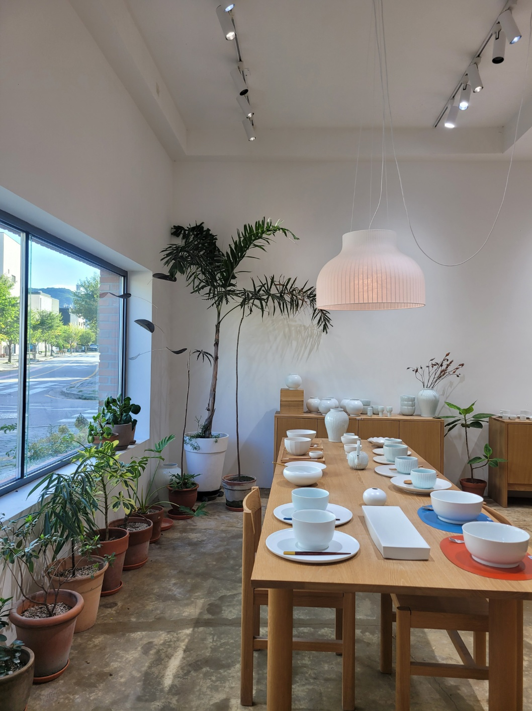
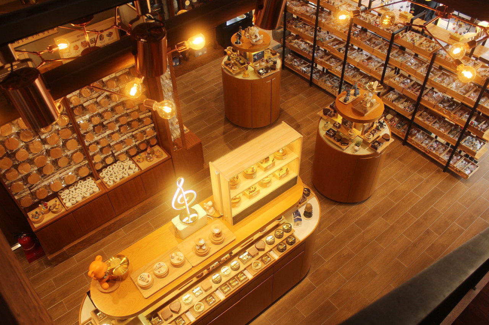

예스파크 제2주차장 하차
이천역에서 편도 약 9분·4.2km를 기준으로 하되, 교통 상황에 따라 요금이 달라질 수 있습니다.

사진출처: 한국관광공사예스파크 안에서 수공예 공방, 도자기 체험, 로컬 식당과 카페를 도보로 잇는 단일 마을 집중형 코스입니다.
공방별 운영일과 체험 예약 여부에 따라 순서를 유연하게 바꾸는 코스입니다.
이천역에서 편도 약 9분·4.2km를 기준으로 하되, 교통 상황에 따라 요금이 달라질 수 있습니다.
물레·페인팅 체험은 공방별로 시간과 수용 인원이 다르므로 출발 전 직접 확인하세요.
공방, 식당과 카페 사이는 걸으며 즐깁니다. 편한 신발과 작은 에코백을 준비하세요.
아래는 오전 10시 이천역 도착 기준 권장안입니다. 방문할 공방의 영업일과 체험 예약에 맞춰 조정하세요.


예약한 물레·페인팅 체험이 있다면 이 시간대에 배치합니다. 체험을 하지 않는 날은 오전에 못 본 공방과 갤러리 숍을 더 둘러봅니다.


OUI 카페, 카페12인치, 카페웰콤, 카페 오르골 등 당일 동선에 맞는 한 곳을 골라 쉬어갑니다. 숙박이 필요한 경우만 갤러리 SO를 참고 정보로 확인하세요.


예스파크 제2주차장 또는 현재 위치에서 택시를 호출합니다. 택시 대기와 교통 상황을 고려해 전철 출발 전 여유를 두세요.